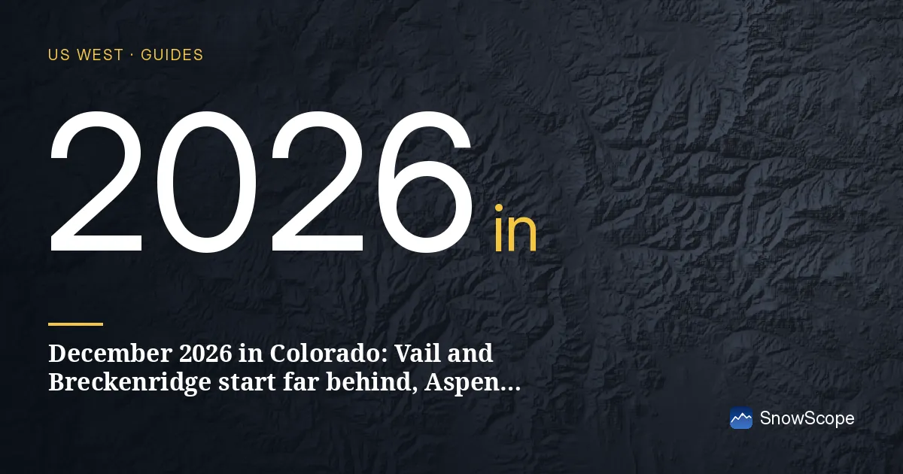

December 2026 in Colorado: Vail and Breckenridge start far behind, Aspen Snowmass leads with 29 in (73 cm)
Colorado starts December 2026 well behind a normal year. At mid-mountain Vail has 3 in (7 cm) of snow where 16 in (40 cm) is usual for late November, and Breckenridge 4 in (9 cm) against 19 in (47 cm). Aspen Snowmass is in the best shape of the big names with 29 in (73 cm) on its upper slopes; a few inches are coming this weekend, not the big storm the state needs.
See the live snow forecast for Colorado in the SnowScope appSnow depth, powder alerts and the 3D map, free.
How big is the gap?
Every resort in the table is under its normal mid-mountain depth for the date. Arapahoe Basin, the highest base area, has 2 in (4 cm) at 11,634 ft (3,546 m) where 17 in (43 cm) is usual. Steamboat, which usually catches the northwest storms, has 1 in (2 cm) against 16 in (41 cm).
On the upper slopes, where snowmaking and the high terrain make a difference, Vail shows 13 in (34 cm) and Breckenridge 13 in (33 cm): enough for a handful of groomed runs, not for the back bowls.
| Resort | Upper slopes today | Mid-mountain: now / normal | Next 3 days |
|---|---|---|---|
| Vail | 13" | 3" / 16" | 4" |
| Breckenridge | 13" | 4" / 19" | 4" |
| Arapahoe Basin | 15" | 2" / 17" | 5" |
| Steamboat | 7" | 1" / 16" | 8" |
| Aspen Snowmass | 29" | 7" / 21" | 5" |
What a normal December adds
December is usually Colorado's catch-up month. At Vail's mid-mountain (9,806 ft (2,989 m)) the usual depth goes from 19 in (49 cm) on December 8 to 30 in (75 cm) on Christmas Day; at Breckenridge (11,207 ft (3,416 m)) from 23 in (58 cm) to 35 in (88 cm).
A 50 cm (20 in) base by New Year was reached at Vail in 83% of 46 winters and at Breckenridge in 91%. So a slow start is common; a slow December on top of it is what makes a lean holiday season.
The next few days
Saturday brings the only snow of the coming days: about 8 in (20 cm) at Steamboat, 5 in (12 cm) at Aspen Snowmass, 4 in (10 cm) at Vail and 4 in (10 cm) at Breckenridge. Over seven days our forecast stays modest, around 4 in (11 cm) at the top of Vail. It is a refresh, not a reset.
Has this happened before?
Slow Colorado starts are common, and the record shows what tends to follow. Vail's leanest winter of the 46 was 1980-81, which peaked at 37 in (94 cm); its biggest, 1983-84, reached 8 ft (245 cm). Steamboat's leanest was the most recent one, 2025-26, at 35 in (89 cm).
Two lessons stand out. First, a thin late November does not decide the winter: the deepest month at Vail is usually March, near 4.5 ft (136 cm) at mid-mountain. Second, the holidays are the part of the season most exposed to a slow start, because they come before the big midwinter storms.
So the practical question is not whether this will be a good season, which nobody can say yet, but how many runs will be open on December 20. History says the answer is usually most of the front side and some of the high bowls.
Where to ski first
Aspen Snowmass has the deepest upper-mountain cover of the five today. Arapahoe Basin and Breckenridge have the highest terrain and the most snowmaking along I-70. Vail usually opens the back bowls only once the base builds, so early December visits stay on the front side.
Tips for skiers
- For early December, choose high terrain and resorts with big snowmaking; leave back bowls and glades for later in the month.
- If you have flexible dates, push a Colorado trip to the week before Christmas: the history shows most of the base arrives in December.
- Look at Telluride and the San Juans for the deepest Colorado snow right now.
- Watch Wolf Creek and the southern resorts for the next storm; they often see the first big totals when the flow turns southwest.
- Compare all Colorado areas on the US West snow hub and read the three-week outlook.
About these numbers
Snow numbers: SnowScope's snow map and forecast for today, and our record of 46 past winters at each resort (an estimate for the area, not the resort's own report).
Cite this report
For research, teaching or the press: the numbers and charts are free to reuse under CC BY 4.0 with this citation.
SnowScope (2026), December 2026 in Colorado: Vail and Breckenridge start far behind, Aspen Snowmass leads with 29 in (73 cm), https://snowscope.app/blog/en/2026/11/colorado-december-2026-snow-vail-breckenridge-behind-what-to-expect.html, accessed 2026-11-27
SnowScope (Atlas Labs). (2026, November 27). December 2026 in Colorado: Vail and Breckenridge start far behind, Aspen Snowmass leads with 29 in (73 cm). SnowScope snow reports. https://snowscope.app/blog/en/2026/11/colorado-december-2026-snow-vail-breckenridge-behind-what-to-expect.html
BibTeX
@misc{snowscope2026coloradodecember2026snow,
author = {{SnowScope (Atlas Labs)}},
title = {December 2026 in Colorado: Vail and Breckenridge start far behind, Aspen Snowmass leads with 29 in (73 cm)},
year = {2026},
month = nov,
howpublished = {\url{https://snowscope.app/blog/en/2026/11/colorado-december-2026-snow-vail-breckenridge-behind-what-to-expect.html}},
note = {Published 2026-11-27 20:56 UTC; accessed 2026-11-27}
}· CC BY 4.0 · Methods, data and tools →
Follow Colorado
Free: a message when fresh snow is coming, and the forecast every morning.
More snow reports

Aspen Snowmass at 5 centimetres, 23 percent of normal for mid-November. Freezing levels above 2,600 metres brought rain instead of snow across the US West on November 8.

A storm on November 4 left 8 to 13 inches of new snow at five high Colorado stations near Aspen. Five days later, half of it was gone. What that means for powder days.

Telluride's upper slopes hold the most snow of any big Colorado resort today. Christmas odds from 46 winters, and where the snow is best.